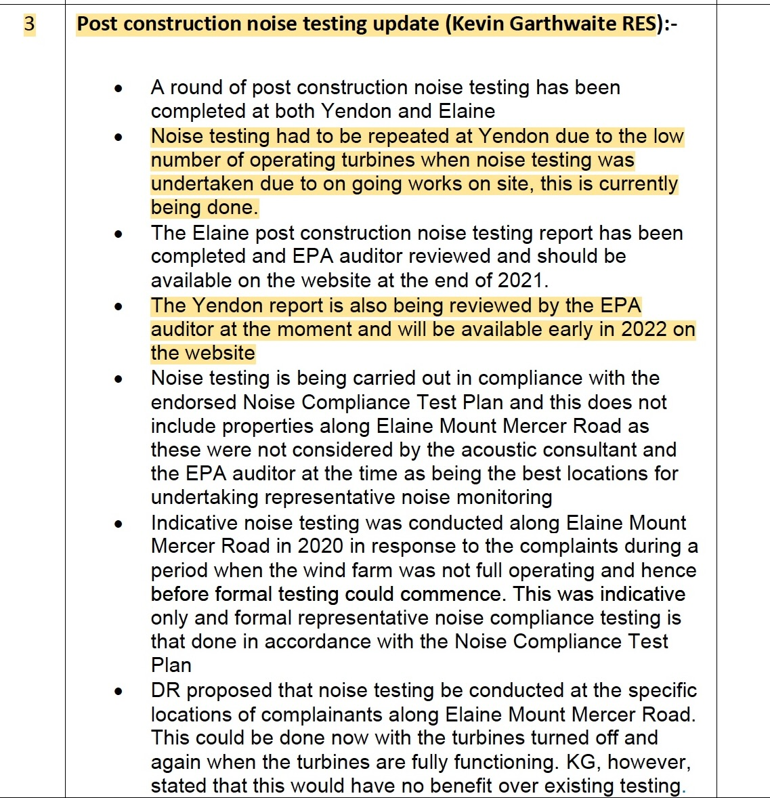
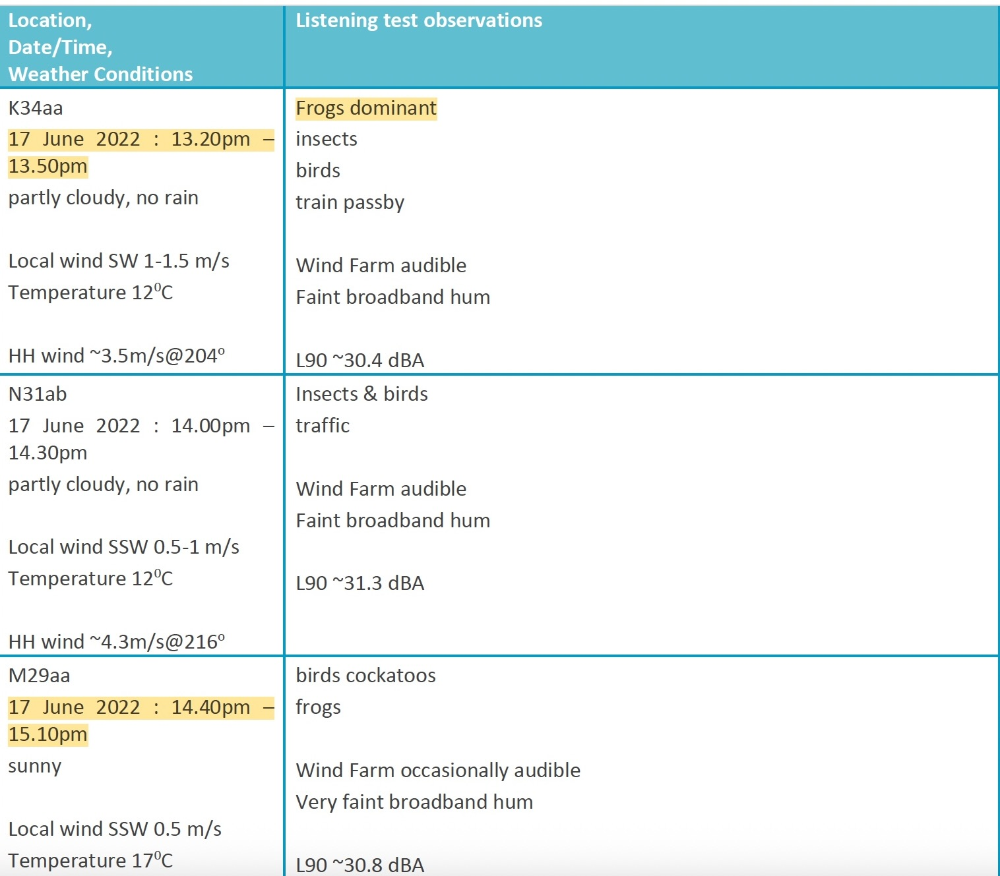
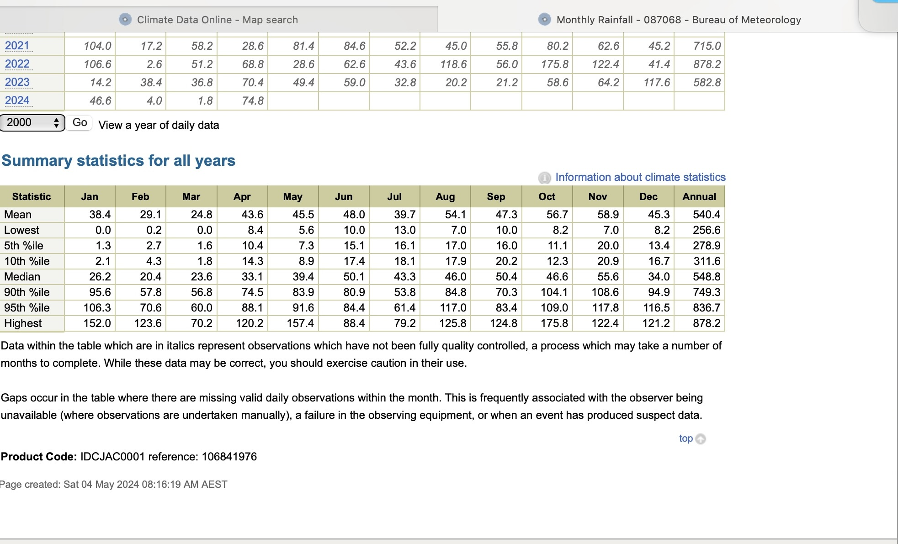
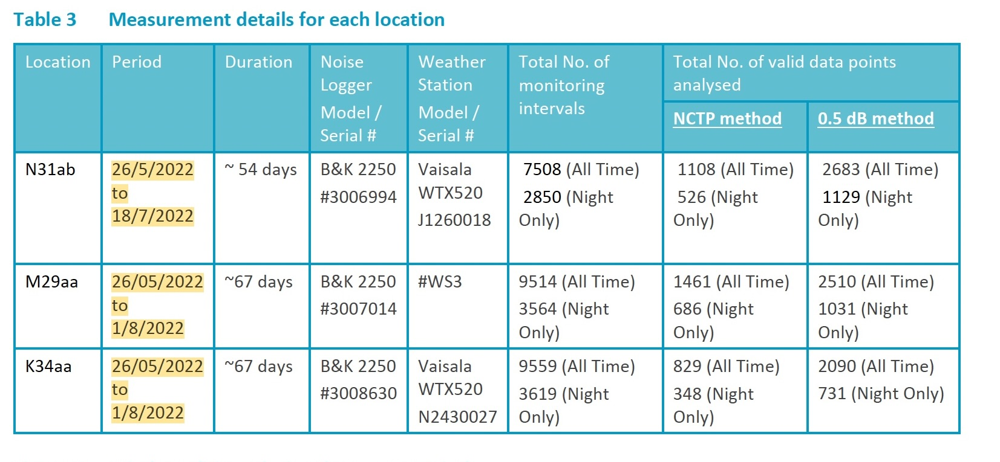
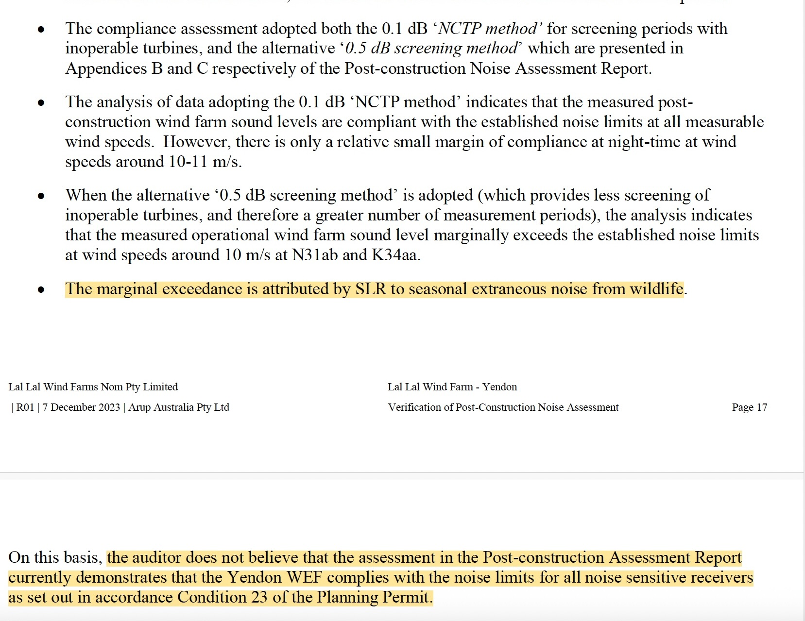

Yendon Stage 1
A plain-English documentary chronology of the Yendon Stage 1 monitoring campaigns, the 2021 report-status record, the later completed assessment, and the treatment of frog noise and wet-weather conditions.
What the record shows
The Yendon Stage 1 pathway did not proceed as one continuous monitoring-and-reporting exercise.
Three monitoring periods are described
The 2024 SLR information session describes Yendon monitoring in March–May 2021, September–October 2021 and a later successful campaign in May–August 2022. The final Yendon report also contains differing descriptions of the 2022 start date, which are reproduced below.
Two documentary questions stand out
First, the 26 October 2021 CRG minute records that a Yendon report was already being reviewed by the EPA auditor, while the later SLR explanation says a post-construction compliance report was not produced from the 2021 monitoring. Second, frog noise becomes central to the 2022 assessment even though the 2021 Appendix D observations at Yendon and Elaine do not record frogs. ARUP's later verification also records marginal exceedances under the alternative 0.5 dB method, SLR's attribution of those exceedances to seasonal wildlife noise, and the auditor's position that the assessment did not then demonstrate compliance for all noise-sensitive receivers.
How Yendon Stage 1 developed
The sequence below separates continuous compliance monitoring from later attended listening surveys so the dates are not conflated.
Yendon monitored at the same time as Elaine
At the public information session, SLR stated that Yendon was monitored simultaneously with Elaine between March and May 2021. The later explanation was that the Yendon data were not sufficient for a compliance result because turbine outages associated with blade rectification works reduced the valid data yield.
Additional attended surveys
The Elaine Stage 1 Appendix D contains attended observations at Yendon on 11 June 2021, after the March–May unattended monitoring period. In the information-session Q&A, Gustaf Reuterswärd said that SLR had gone back and done surveys while “trying to get Yendon a second time”. The transcript then explains that the June work supplemented earlier listening surveys undertaken in low-wind or cut-in conditions.
Second compliance-monitoring campaign
The information-session presentation identifies a second Yendon compliance-monitoring period between September and October 2021. SLR later described both 2021 rounds as inconclusive because there was not enough valid data.
CRG records repeat testing and a Yendon report under auditor review
The Community Reference Group update says Yendon noise testing had to be repeated because of the low number of operating turbines during the earlier testing. The same update also says the Yendon report was being reviewed by the EPA auditor and would be available in early 2022.
Later monitoring produces the Yendon Stage 1 assessment
SLR's information-session presentation describes a later campaign from about May to August 2022 as “third time's lucky”. The final report was eventually auditor-verified on 7 December 2023.
The 2022 report does not give one consistent start date
| Source location | Monitoring period stated |
|---|---|
| Yendon report — Introduction | Noise monitoring conducted between June 2022 and August 2022. |
| Yendon report — methodology table | Approximately nine weeks, 26 May 2022 to 1 August 2022. |
| Yendon report — Conclusion | Approximately 60 days, 26 June 2022 to 1 August 2022. |
| 2024 information-session transcript | Approximately 67 days, “sort of between May and August 2022”. |
What was the “Yendon report” in October 2021?
Two later records describe the 2021 reporting position differently.

2021 and 2022 — the frog record changes
The comparison is useful because the Elaine Stage 1 Appendix D does not only contain Elaine observations. It also records attended observations at Yendon. The last attended observations reproduced in the Elaine Stage 1 Appendix D are dated 11 June 2021; the Yendon Stage 1 Appendix D continues to 17 June 2022.
2021 — Elaine Stage 1 Appendix D
The 2021 Appendix D records attended listening at Yendon and Elaine on 10 March, 31 March and 11 June 2021. The entries identify birds, insects, traffic, wind, machinery, livestock and turbine sound. No frog observation is recorded in the Appendix D listening notes at either the Yendon or Elaine survey entries.
The report uses “frog” once elsewhere in a generic description of the NCTP extraneous-noise screening process; that is different from an attended observation recording frogs at a survey location.
2022 — Yendon Stage 1 Appendix D
The later Yendon Appendix D repeatedly records frogs during attended surveys, including descriptions such as “frogs continuous”, “frogs prominent”, “frogs dominant”, “distant frogs” and “WTG dominant over frogs”. The observations span receptor, intermediate and near-turbine positions.
The difference is therefore visible within SLR's own attended-observation records, without needing to infer the presence or absence of frogs from noise measurements alone.
| 2022 Yendon example | Appendix D observation |
|---|---|
| K34aa — 26 May 2022 | “Frogs continuous” |
| M29aa — 16 June 2022 | “Frogs prominent” |
| K34aa — 17 June 2022, 12:20–12:40 am | “Frogs dominant” |
| Near YSTW36 — 17 June 2022 | “WTG dominant over frogs” |
| K34aa — 17 June 2022, 1:20–1:50 pm | “Frogs dominant” |

Frogs become material to the Yendon assessment
The Yendon report does more than record frogs in the listening notes. It relies on frog activity when explaining the measured data and the compliance assessment.
What the Yendon report says
SLR states that the June–July 2022 survey period was quite wet and that a significant proportion of survey data was affected by frog noise, particularly at night.
In its conclusion, SLR says extended wet weather resulted in very high and widespread frog populations, that frog-call noise was significant at most locations, and that residual frog influence remained in the valid data set. The report says that residual influence served to artificially elevate the derived wind-turbine noise level.
Appendix F is then devoted to an Insect/Frog Noise Screening Analysis, including selected audio periods and an assessment of frog/insect influence that was not removed by the NCTP screening method.
Match the rainfall period to the observation or measurement period
The rainfall comparison is separated into two different questions: rainfall relevant to the attended listening surveys, which had finished by mid-June, and rainfall relevant to the longer unattended monitoring campaign, which continued through July and ended at the latest on 1 August 2022.


A. Rainfall relevant to the attended observations
The last attended observations shown in the Elaine Stage 1 Appendix D are dated 11 June 2021. The Yendon Stage 1 Appendix D observations continue to 17 June 2022. July and August rainfall therefore cannot explain frog calls recorded during those attended surveys.
| Displayed monthly period | 2021 | 2022 |
|---|---|---|
| January–June | 374.0 mm | 320.4 mm |
| March–June | 252.8 mm | 211.2 mm |
| May–June | 166.0 mm | 91.2 mm |
| June | 84.6 mm | 62.6 mm |
The displayed monthly totals are higher in 2021 for each of these periods. Because monthly totals include rainfall after the individual June listening dates, they do not establish the precise rainfall that had accumulated before 11 June 2021 or 17 June 2022. Daily rainfall records would be required for that narrower comparison.
B. Rainfall relevant to the unattended monitoring
The Yendon Table 3 record shows monitoring commencing on 26 May 2022. N31ab ended on 18 July, while M29aa and K34aa continued to 1 August. For a monthly comparison, May–July therefore captures the substantive monitoring months without importing the later August rainfall.
| Displayed monthly period | 2021 | 2022 |
|---|---|---|
| January–July | 426.2 mm | 364.0 mm |
| May–July | 218.2 mm | 134.8 mm |
On the displayed BOM totals, 2021 was also wetter over these broader comparison periods.
ARUP: the alternative analysis produced marginal exceedances
The independent auditor's 7 December 2023 verification extract shows why SLR's treatment of seasonal wildlife noise mattered to the compliance result.

What the auditor records
ARUP records that the 0.1 dB “NCTP method” indicated compliance at measurable wind speeds, although with a relatively small night-time compliance margin around 10–11 m/s.
ARUP then records that, using the alternative 0.5 dB screening method, the measured operational wind-farm sound level marginally exceeds the established noise limits around 10 m/s at N31ab and K34aa.
The auditor records that SLR attributed the marginal exceedance to seasonal extraneous noise from wildlife.
ARUP's resulting position was that the assessment in the Post-construction Assessment Report did not currently demonstrate that the Yendon WEF complied with the noise limits for all noise-sensitive receivers in accordance with Condition 23 of the Planning Permit.
What is established — and what remains unresolved
Established by the published material
- Yendon monitoring was attempted during 2021 and later repeated.
- The 26 October 2021 CRG minute records a Yendon report under EPA-auditor review.
- SLR later said the 2021 Yendon monitoring did not result in a post-construction compliance report.
- The eventual successful Yendon monitoring occurred in 2022, although the final report contains differing start-date descriptions.
- The 2021 Elaine Stage 1 Appendix D includes Yendon observations and does not record frogs in the attended-listening notes.
- The 2022 Yendon assessment repeatedly records frogs and makes residual frog noise material to interpretation of the assessment data.
- ARUP's 7 December 2023 verification records marginal exceedances under the alternative 0.5 dB screening method at N31ab and K34aa, records SLR's attribution to seasonal wildlife noise, and states that the assessment did not then demonstrate compliance for all noise-sensitive receivers.
Questions left by the record
- What Yendon report was under auditor review in October 2021?
- How should the differing 2022 monitoring start dates in the Yendon report be reconciled?
- How does the wet-season / wildlife-noise explanation reconcile with the time-aligned 2021 rainfall and attended-observation record?
Later substantive responses or documentary corrections can be incorporated into this page if identified.